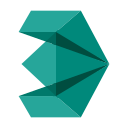
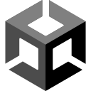

Software Development
Programming Language

Modelling Software

Game Engine
Award Winner
About Beyond Dark
The Game!
Beyond Dark is a horror-action game, created as a capstone project by a team of 7 to conclude our Game Development program from Niagara College.
In Beyond Dark the player is trapped within the village of Deadwood with an evil entity chasing after them.
Mantainning stealth to hide and avoid the entity, eventually finding the secret to gain strenght and combat the entity in a different dimension.
TEAM ROLE: PROGRAMMER
As a programmer on the team I have focused on developing functionality,
systems and mainly the behaviour for the enemy's AI in the game called Vorgon.
Vorgon's AI was designed using Finite State Machines,
definning behaviours and their transitions to each other.
Vorgon can interact with other gameplay systmes in Beyond Dark,
and approaches the player based on hearing detection and line off sight,
failig a trap setup in the game can also alert Vorgon as some other systems in the game.

Level-Up Shocase Award Winner
Beyond Dark had the honour of being presented in Level Up Student Showcase 2023, comepting against students projects from all colleges and universities
around Ontario.
After the showcase and intense judging Beyond Dark was awarded:
Level Up winner for Best Artistic Achievement presented by @gameloftto 2023.
Level Up winner for Best Technical Innovation presented by @ukengames 2023.

Work in Progress!
The team behind Beyond Dark, Mortal Mind Games, has continued working in the project with the hope of ebentually publishing the game on Steam.
At the moment we do not have a tentative release date.
The Beta for Beyond Dark can still be downloaded and played!